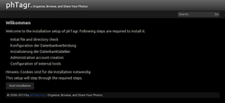
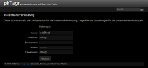
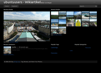
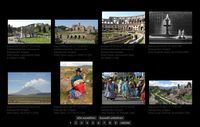
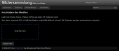
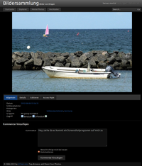
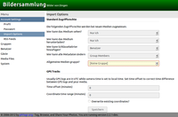

phTagr
Dieser Artikel wurde für die folgenden Ubuntu-Versionen getestet:
Ubuntu 14.04 Trusty Tahr
Artikel für fortgeschrittene Anwender
Dieser Artikel erfordert mehr Erfahrung im Umgang mit Linux und ist daher nur für fortgeschrittene Benutzer gedacht.
Zum Verständnis dieses Artikels sind folgende Seiten hilfreich:
phTagr  ist eine webbasierte Bildergalerie. Das Programm ist freie Software unter der Lizenz GPLv2, die sich in aktiver Entwicklung befindet und eine Vielzahl an Funktionen bietet. Besonders kleine Werkzeuge wie das automatische Entpacken von Archivdateien (.zip) beim Upload bieten großen Komfort.
ist eine webbasierte Bildergalerie. Das Programm ist freie Software unter der Lizenz GPLv2, die sich in aktiver Entwicklung befindet und eine Vielzahl an Funktionen bietet. Besonders kleine Werkzeuge wie das automatische Entpacken von Archivdateien (.zip) beim Upload bieten großen Komfort.
Grundsätzlich werden die Dateien (Fotos und Videos) über ihre Metadaten (Tags) kategorisiert. Die Gliederung und Suche erfolgt daher nicht über Ordner, sondern über die in den Dateien eingebetteten Informationen. Metadaten wie Exif- und IPTC-Felder können nicht nur ausgelesen, sondern auch nachbearbeitet werden. Sind Geodaten vorhanden, können diese auf einer Karte dargestellt werden (Google Maps API Key  erforderlich). Auch Autorotation (Hoch-/Querformat) wird angeboten. Zudem bietet das Programm eine leicht verständliche, aber dennoch mächtige Benutzerverwaltung mit Gruppen und Rechtemanagement.
erforderlich). Auch Autorotation (Hoch-/Querformat) wird angeboten. Zudem bietet das Programm eine leicht verständliche, aber dennoch mächtige Benutzerverwaltung mit Gruppen und Rechtemanagement.
Die Online-Demo bietet einen kleinen Vorgeschmack. Alternative Webanwendungen sind im Artikel Bilder verwalten aufgeführt.
Funktionsübersicht:
Auto-Rotation und Größenänderung anhand der Exif-Daten
Kommentare
E-Mail-Benachrichtigungen
Benutzerverwaltung mit Gruppen und Gast-Konten
Präsentationsmodus (Diaschau) mit Flash ("Cooliris for Web")
Unterstützte Formate:
Bildformate: JPG, PNG, TIF(F)
Videoformate: AVI, MOV, MPG
Sonstige: GPX und weitere
Hinweis:
Grundlage des Artikels ist die stabile Version 2.3
Voraussetzungen¶
Um das Programm nutzen zu können, braucht man einen Webserver mit PHP und MySQL. Die Seite des Projektes stellt Anleitungen für den Apache und eine ergänzende Anleitung für nginx bereit. Im Folgenden wird die Installation auf einem lokalen System mit Apache erklärt.
Folgende Pakete werden benötigt [1]:
apache2
libapache2-mod-php5
php5-mysql
php5-gd
php5-cli
mysql-server
mysql-client
 mit apturl
mit apturl
Paketliste zum Kopieren:
sudo apt-get install apache2 libapache2-mod-php5 php5-mysql php5-gd php5-cli mysql-server mysql-client
sudo aptitude install apache2 libapache2-mod-php5 php5-mysql php5-gd php5-cli mysql-server mysql-client
Nachdem man die Pakete installiert hat, kann man mit der Konfiguration anfangen.
Konfiguration¶
Apache¶
Zunächst muss man das Modul mod_rewrite von Apache aktivieren [2]:
cd /etc/apache2/mods-enabled/ sudo ln -s ../mods-available/rewrite.load
Damit anhand von .htaccess-Dateien Pfade geändert werden können, muss die Datei /etc/apache2/sites-available/default bearbeitet [3][4] werden. Dort muss im Abschnitt <Directory /var/www/> der Eintrag "AllowOverride None" nach "AllowOverride All" geändert werden und letztendlich folgendermaßen aussehen:
<Directory /var/www/>
Options Indexes FollowSymLinks MultiViews
AllowOverride All
Order allow,deny
allow from all
</Directory>PHP-Uploadlimit ändern¶
Damit das Hochladen von Mediendateien besser funktioniert, kann man das Upload-Limit von PHP ändern. Dazu ändert man in /etc/php5/apache2/php.ini die Werte von upload_max_filesize und post_max_size (beispielsweise auf 128 MiB).
Das Ergebnis sieht dann so aus:
; Maximum allowed size for uploaded files. ; http://php.net/upload-max-filesize upload_max_filesize = 128M ... ; Maximum size of POST data that PHP will accept. ; http://php.net/post-max-size post_max_size = 128M
Nach der Konfiguration muss die Apache-Konfiguration mit folgendem Befehl neu geladen werden.
sudo /etc/init.d/apache2 force-reload
Datenbank einrichten¶
Bevor man phTagr aufruft, sollte man noch eine Datenbank erstellen. Der folgende Codeblock basiert auf der Allgemeinen Installationsanleitung .
sudo mysql -u root -p mysql> CREATE DATABASE phtagr DEFAULT CHARACTER SET utf8 DEFAULT COLLATE utf8_general_ci; mysql> GRANT ALL ON phtagr.* TO 'phtagr'@'localhost' IDENTIFIED BY 'geheimespassword'; mysql> quit
Dabei muss geheimespassword natürlich durch ein entsprechendes Kennwort ausgetauscht werden.
Optionale Programme¶
Möchte man weitere Funktionen nutzen, können weitere Pakete installiert werden. Diese sind hier in die Bereiche Photo und Video untergliedert (empfehlenswert sind mindestens die Werkzeuge zur Bildbearbeitung):
imagemagick (zum Erstellen von Vorschaubildern (Thumbnails) mit ImageMagick)
libimage-exiftool-perl (universe, zum Lesen und Schreiben von Metadaten mit ExifTool)
mit apturl
Paketliste zum Kopieren:
sudo apt-get install imagemagick libimage-exiftool-perl
sudo aptitude install imagemagick libimage-exiftool-perl
ffmpeg (um Videos mit FFmpeg in Flashvideos zu konvertieren, nur bis Ubuntu 13.10)
flvtool2 (universe, zum Verbessern von Flashvideos mittels Cuepoint)
mit apturl
Paketliste zum Kopieren:
sudo apt-get install ffmpeg flvtool2
sudo aptitude install ffmpeg flvtool2
Installation¶
 Die Anwendung ist nicht Bestandteil der offiziellen Paketquellen, daher muss die Installation manuell erfolgen.
Die Anwendung ist nicht Bestandteil der offiziellen Paketquellen, daher muss die Installation manuell erfolgen.
Manuell¶
Durch die folgenden Befehle wird die stabile Version 2.3 Version von phTagr heruntergeladen und nach /var/www/html bzw. /var/www entpackt.
sudo wget http://sourceforge.net/projects/phtagr/files/phtagr-2.3-0fc1a640.tar.gz sudo tar -xzf phtagr-2.3-0fc1a640.tar.gz -C /var/www/html sudo chown -R root:root /var/www/html/phtagr
Möchte man phTagr für einen Benutzer in dessen Homeverzeichnis bzw. nach ~/public_html installieren, muss man den Ordner /var/www/html im obigen Beispiel entsprechend ändern. Nun werden noch einige Rechte angepasst bzw. Schreibzugriffe für die Gruppe www-data gesetzt:
cd /var/www/html/phtagr && sudo chown -R www-data Config users tmp && cd
Des Weiteren sollte man – aber nur bei einer Installation ins Homeverzeichnis – .htaccess-Dateien gemäß dieser Anleitung anlegen.
Setup¶
Um die Einrichtung abzuschließen, muss man die Adresse http://SERVER_IP_ODER_NAME/phtagr/ mit einem Browser aufrufen und die entsprechenden Zugangsdaten setzen. Die Konfiguration erfolgt in drei Schritten:
 
Datenbank konfigurieren (siehe Datenbank einrichten)
Rechner:
localhostDatenbank:
phtagrBenutzername:
rootPasswort:
********Tabellenprefix:
phtagr
Administratorkonto konfigurieren
Benutzername:
adminPasswort:
********Bestätigung:
********Emailadresse:
name@domain.de(Beispiel)
Externe Programme (siehe Optionale Programme)
Pfade zu
exiftool,convert,ffmpegundflvtool2festlegen
Danach steht phtagr zur Verfügung.
Verwendung¶

phTagr ist in mehrere Teile zu unterteilen. Wenn man phTagr beispielsweise via http://SERVER_IP_ODER_NAME/phtagr/ aufruft, landet man zunächst auf der Startseite. Auf dieser werden einem die neuesten Medien und Kommentare angezeigt, sowie ein zufällig ausgewähltes Medium und eine Reihe von Schlagwörtern und Kategorien. Diese werden, wie in einer Schlagwortwolke, in Abhängigkeit der Verwendung in verschiedenen Größen dargestellt.
Wichtig zum Verständnis: phTagr arbeitet ohne nach außen sichtbare Ordnerstrukturen. Eine Auswahl/Filterung erfolgt ausschließlich über Kriterien wie Eigentümer, Datum oder andere, in die Bilder eingebettete Informationen (Ort, Beschreibung, etc.). Essentiell zur praktischen Nutzung sind also möglichst vollständige Metadaten.
Intern werden dagegen sehr wohl Ordner verwendet, die automatisch beim Hochladen erstellt werden und als Namen das Upload-Datum erhalten.

Explorer / Meine Photos¶
Im Explorer sieht man eine Übersicht der Bilder. Funktional sind "Explorer" und "Meine Photos" identisch, der einzige Unterschied: Unter "Meine Photos" werden nur die eigenen Bilder angezeigt, während im "Explorer" die Bilder aller Benutzer angezeigt werden (für die man die entsprechenden Rechte besitzt).

Upload¶
Die Oberfläche zum Hochladen von Medien ist bei phTagr sehr modern gestaltet. So wird Drag & Drop und ein Dateiauswahldialog angeboten. Ordner können nicht hochgeladen werden, sondern immer nur einzelne Dateien. Neben parallelem Upload mit Fortschrittsanzeige bietet das Programm auch das automatische Entpacken des ZIP-Formats, um viele Bilder bequem als eine (gepackte) Datei hochladen zu können.

Bildansicht¶
In der Bildansicht steht neben einer großformatigen Vorschau des Bildes auch eine Kommentarfunktion zur Verfügung. Je nach Einstellung können auch Gäste oder jeder Internetbesucher (bei öffentlichen Bildern) kommentieren. Zum Schutz vor Spam sorgt ein Captcha.
Direkt unter dem Bild werden Informationen angezeigt, diese können bei Besitz entsprechender Rechte auch direkt geändert werden. Daten, die an dieser Stelle in die Datenbank geschrieben werden, können in den Einstellungen auch direkt in die Mediendateien geschrieben werden.
Schreibtisch¶

Auf dem Schreibtisch können die Einstellungen von phTagr geändert werden. Im Einzelnen sind das konkrete Angaben zu Benutzern, Gruppen und Standardeinstellungen für das Veröffentlichen von Medien. Benutzer mit erweiterten Rechten können hier auch den Speicherplatz von Standard-Benutzern beschränken (quota).
Ebenfalls hier können die Pfade für installierte Drittprogramme wie ImageMagick konfiguriert werden, wenn man keine Root-Rechte besitzt, um entsprechende Programme zu installieren.
Daneben dient der Schreibtisch zur Bildverwaltung. Über den Menüpunkt "Media files" kann die interne Ordnerstruktur angezeigt und Bilder auch wieder gelöscht werden.
Problembehebung¶
Benutzer können keine Bilder hochladen¶
Falls sich ein eingerichteter Benutzer zwar anmelden, aber keine Bilder hochladen kann, meldet man sich als Administrator an und ändert in den Einstellungen die "Uploadgröße" für den jeweiligen Benutzer. Als Beispiel kann die Angabe im Administrator-Konto dienen.
Update¶
Eine Aktualisierung erfolgt grundsätzlich in drei Schritten:
Sichern der vorhandenen Installation
Herunterladen und Kopieren der neuen Dateien
Zurückspielen der Konfiguration
Details sind der Anleitung How to update phTagr zu entnehmen.
PHP call-time error¶
Der Funktionsaufruf "Call-time pass-by-references" wurde in PHP 5.4 entfernt. phTagr 2.2 war daher nur mit PHP 5.3 nutzbar. Die Version 2.3 behebt dieses Problem.
 Programmübersicht
Programmübersicht- Erstellt mit Inyoka
-
 2004 – 2017 ubuntuusers.de • Einige Rechte vorbehalten
2004 – 2017 ubuntuusers.de • Einige Rechte vorbehalten
Lizenz • Kontakt • Datenschutz • Impressum • Serverstatus -
Serverhousing gespendet von